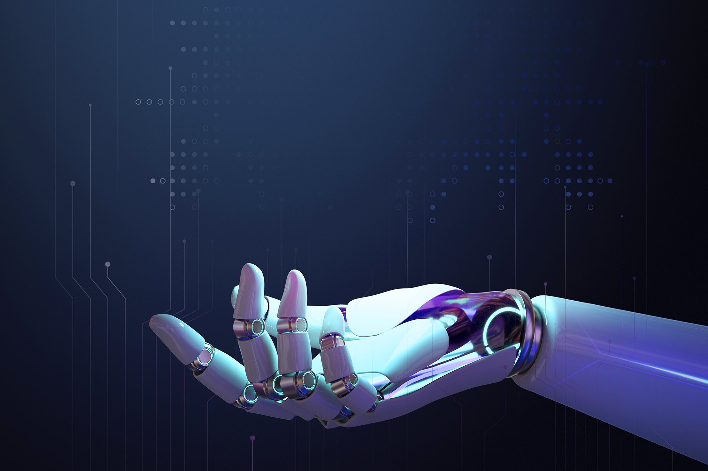

La Inteligencia Artificial
La inteligencia artificial (IA) se refiere a la capacidad de las máquinas para realizar
tareas
que requieren inteligencia humana. Esto incluye la capacidad de aprender, razonar,
planificar,
reconocer patrones, procesar lenguaje natural y percibir el entorno, entre otras funciones.
La
IA se ha convertido en un campo interdisciplinario que abarca la informática, la matemática,
la
estadística, la psicología y otras disciplinas.
Existen dos tipos principales de inteligencia artificial: la IA débil y la IA fuerte. La IA
débil se refiere a sistemas diseñados para realizar tareas específicas sin poseer una
comprensión consciente o una verdadera inteligencia. Por otro lado, la IA fuerte se refiere
a
sistemas con la capacidad de comprender y razonar de manera similar a los seres humanos.
La IA ha recorrido un largo camino desde sus inicios en la década de 1950. En sus primeros
días,
los investigadores se centraron en crear programas capaces de resolver problemas matemáticos
y
lógicos simples. A medida que avanzaron las décadas, la IA comenzó a adentrarse en áreas más
complejas, como el procesamiento del lenguaje natural y la visión por computadora.
Uno de los hitos más significativos en la historia de la IA fue el desarrollo de las redes
neuronales artificiales, inspiradas en el funcionamiento del cerebro humano. Estas redes
permitieron el aprendizaje automático, una rama de la IA que ha experimentado un crecimiento
exponencial en los últimos años. El aprendizaje automático ha dado lugar a avances notables
en
campos como el reconocimiento de voz, la traducción automática y la detección de patrones en
grandes conjuntos de datos.
Además, la IA se ha convertido en una herramienta esencial en industrias como la medicina,
la
automoción, la finanzas y la logística. Los sistemas de IA pueden analizar datos médicos
para
ayudar en el diagnóstico de enfermedades, conducir vehículos de manera autónoma y optimizar
la
cadena de suministro, entre muchas otras aplicaciones.
Una de las aplicaciones de inteligencia artificial mas común es:
El Chat Gpt
Chat GPT es un modelo de lenguaje desarrollado por OpenAI. Es una red neuronal de tipo transformer, que fue entrenada con un gran conjunto de datos de texto en inglés, con el objetivo de generar texto de manera autónoma y coherente. Esto significa que cuando se le proporciona una pequeña muestra de texto como “prompt” o “estímulo”, el modelo puede continuar generando texto a partir de ese punto, creando oraciones y párrafos coherentes.Recuerda que hay paises en donde el Chat Gpt no se encuentra disponible, por esto debes usar un VPN si en tu pais no se encuentra disponible
